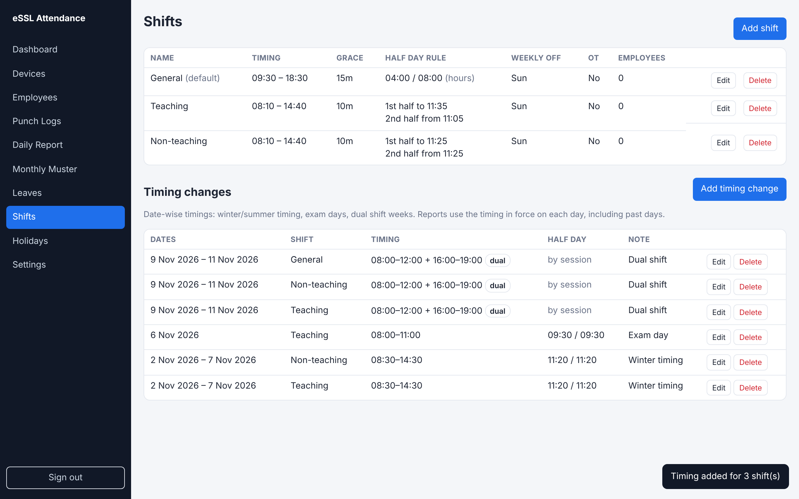
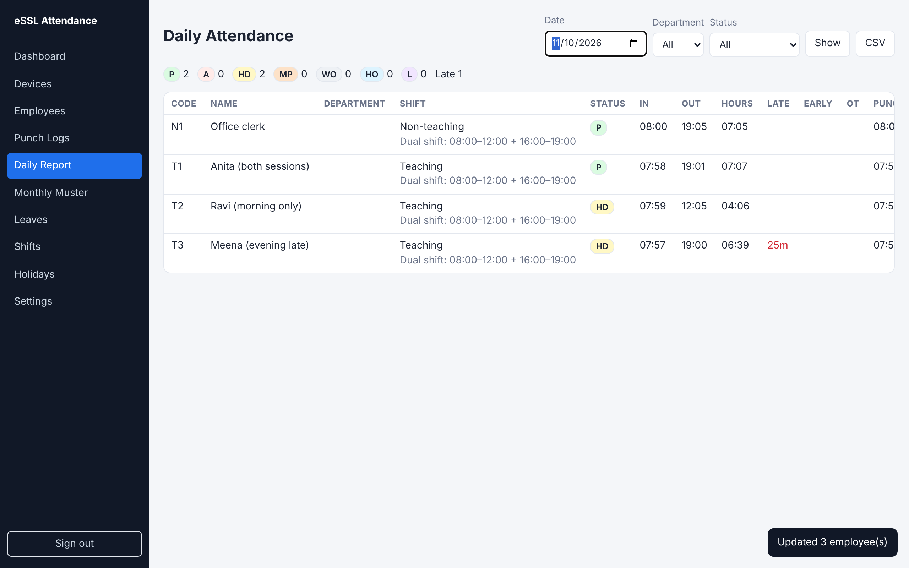

When the school timing changes, add a timing change on the Shifts page instead of editing the shift. Each report uses the timing in force on that day, so past days are re-checked automatically, and the shift's normal timing comes back when the change ends.
| Kind of change | How to enter it (Shifts → Add timing change) |
|---|---|
| Period (winter timing) | From 2 Nov, To 7 Nov, 08:30–14:30. Leave To empty if it lasts until the next change. |
| Single day (exam, event) | Same date in From and To. A single day overrides a period that covers it. |
| Dual shift | Morning 08:00–12:00 as Start/End, plus Evening session 16:00–19:00. |


Punches before the middle of the break count for the morning session, the rest for the evening. A session counts when it has an in and an out punch, the in within the late allowance and the out within early-exit grace. Hours worked leave out the break; late and early minutes add up over both sessions.
| Punches (sessions 08:00–12:00 + 16:00–19:00) | Status | Remark |
|---|---|---|
| 07:58, 12:02, 15:58, 19:01 | P | |
| 07:59, 12:05 | HD | Evening: absent |
| 07:57, 12:01, 16:25, 19:00 | HD | Evening: late 25 min |
| 07:58, 12:01, 16:00 | HD | Evening: one punch only (add the missing punch to fix) |